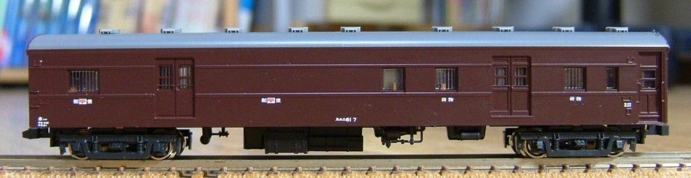
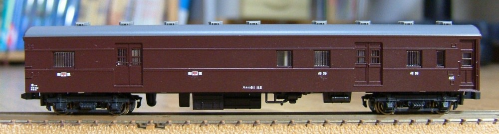
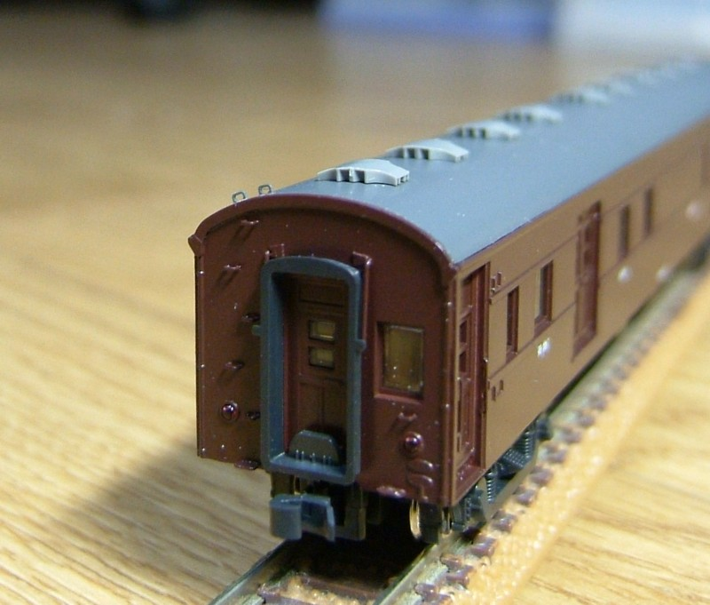
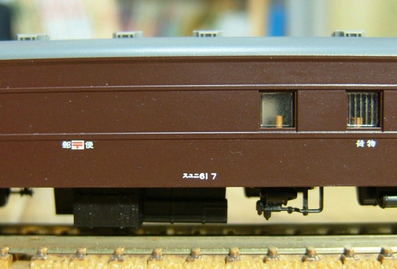

リトルジャパン 0番台 & 100番台
こちらはリトルジャパンモデルズのキットの組み立てです。
手すり別パーツ化と妻面のそのほか若干の加工をしました。
端梁の加工をしたいのですが、その気力があるかどうか…

0番台。床下はKATOのスハフ42のものを使用しています。
キットのよくできた床下(特に短い水タンクやトイレ流し管などは魅力高い)
を使うかどうかはかなり迷ったのですが、KATO製台車がすぐに使えること、
テールライトの点灯化が簡単なことには勝てませんでした。

100番台。違うのは台車だけかと思いきや床下が違います。こちらは手持ちの都合でオハニ36。

0番台の車端部です。ベンチレータはトミックスのキハ28用です。シャープな成型がいい感じです。
また、端面の裾は延長しました。端梁の加工をするとこの部分で雰囲気がぜんぜん変わります。

0番台の車番。'6' と '1' の間隔が短いGMの物を使用。気がつくとキットのままなのは側面と屋根だけ?